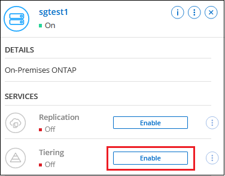

Manos a la obra
Manos a la obra
Organización en niveles de los datos de los clústeres de ONTAP en las instalaciones a StorageGRID
 Sugerir cambios
Sugerir cambios
Libere espacio en sus clústeres de ONTAP en las instalaciones organizando en niveles los datos inactivos en StorageGRID.
Inicio rápido
Empiece rápidamente siguiendo estos pasos o desplácese hacia abajo hasta las secciones restantes para obtener todos los detalles.
 Prepárese para organizar los datos en niveles en StorageGRID
Prepárese para organizar los datos en niveles en StorageGRIDNecesita lo siguiente:
-
Un clúster de ONTAP en las instalaciones que ejecuta ONTAP 9.4 o posterior y una conexión a StorageGRID a través de un puerto especificado por el usuario. "Aprenda a detectar un clúster".
-
StorageGRID 10.3 o una versión posterior con claves de acceso de AWS que tienen permisos de S3.
-
Un conector instalado en sus instalaciones.
-
Conexión de red para el conector que permite una conexión HTTPS saliente al clúster de ONTAP, a StorageGRID y al servicio de organización en niveles de BlueXP.
 Configure la organización en niveles
Configure la organización en nivelesEn BlueXP, seleccione un entorno de trabajo en las instalaciones, haga clic en Activar para el servicio Tiering y siga las indicaciones para organizar los datos en niveles en StorageGRID.
Requisitos
Verifique la compatibilidad con su clúster de ONTAP, configure las redes y prepare el almacenamiento de objetos.
La siguiente imagen muestra cada componente y las conexiones que necesita preparar entre ellos:


|
La comunicación entre el conector y StorageGRID es únicamente para la configuración del almacenamiento de objetos. |
Preparar los clústeres de ONTAP
Los clústeres de ONTAP deben cumplir los siguientes requisitos cuando organizando datos en niveles en StorageGRID.
- Plataformas ONTAP compatibles
-
-
Al usar ONTAP 9.8 y versiones posteriores: Puede organizar los datos en niveles desde sistemas AFF, o sistemas FAS con agregados íntegramente de SSD o agregados íntegramente de HDD.
-
Al usar ONTAP 9.7 y versiones anteriores: Puede organizar en niveles datos de sistemas AFF o sistemas FAS con agregados compuestos en su totalidad por SSD.
-
- Versión de ONTAP compatible
-
ONTAP 9.4 o posterior
- Licencia
-
No es necesaria una licencia de organización en niveles de BlueXP en tu cuenta de BlueXP ni una licencia de FabricPool en el clúster de ONTAP para organizar los datos en niveles en StorageGRID.
- Requisitos para la red de clúster
-
-
El clúster ONTAP inicia una conexión HTTPS a través de un puerto especificado por el usuario al nodo de puerta de enlace StorageGRID (el puerto se puede configurar durante la configuración del almacenamiento por niveles).
ONTAP lee y escribe datos en y desde el almacenamiento de objetos. El almacenamiento de objetos nunca se inicia, solo responde.
-
Es necesaria una conexión de entrada desde el conector, que debe residir en sus instalaciones.
No es necesaria una conexión entre el clúster y el servicio de organización en niveles de BlueXP.
-
Se requiere una LIF de interconexión de clústeres en cada nodo ONTAP en el que se alojan los volúmenes que se desean organizar. La LIF debe estar asociada al IPspace que ONTAP debería utilizar para conectarse al almacenamiento de objetos.
Cuando configuras la organización en niveles de los datos, la organización en niveles de BlueXP te indica que debes utilizar el espacio IP. Debe elegir el espacio IP al que está asociada cada LIF. Puede ser el espacio IP «predeterminado» o un espacio IP personalizado que haya creado. Más información acerca de "LIF" y.. "Espacios IP".
-
- Volúmenes y agregados compatibles
-
El número total de volúmenes que puede organizar en niveles BlueXP puede ser inferior al número de volúmenes en tu sistema ONTAP. Esto se debe a que los volúmenes no pueden estar organizados en niveles desde algunos agregados. Consulte la documentación de ONTAP para "Funcionalidad o funciones no compatibles con FabricPool".
|
|
La organización en niveles de BlueXP admite volúmenes FlexGroup, a partir de ONTAP 9,5. El programa de instalación funciona igual que cualquier otro volumen. |
Detectar un clúster de ONTAP
Debe crear un entorno de trabajo ONTAP en las instalaciones en el lienzo BlueXP antes de iniciar la clasificación por niveles de los datos inactivos.
Preparando StorageGRID
StorageGRID debe cumplir con los siguientes requisitos.
- Versiones de StorageGRID compatibles
-
Se admite StorageGRID 10.3 y versiones posteriores.
- Credenciales de S3
-
Cuando configuras la organización en niveles en StorageGRID, tienes que proporcionar la organización en niveles de BlueXP con una clave de acceso S3 y una clave secreta. La organización en niveles de BlueXP utiliza las claves para acceder a tus buckets.
Estas claves de acceso deben estar asociadas a un usuario que tenga los siguientes permisos:
"s3:ListAllMyBuckets", "s3:ListBucket", "s3:GetObject", "s3:PutObject", "s3:DeleteObject", "s3:CreateBucket" - Control de versiones de objetos
-
No debe habilitar el control de versiones de objetos StorageGRID en el bloque de almacenamiento de objetos.
Creación o conmutación de conectores
Se requiere un conector para organizar los datos en niveles en el cloud. Al organizar los datos en niveles en StorageGRID, debe haber un conector disponible en las instalaciones. Tendrá que instalar un conector nuevo o asegurarse de que el conector seleccionado actualmente reside en las instalaciones.
Preparación de la conexión a redes para el conector
Asegúrese de que el conector tiene las conexiones de red necesarias.
-
Asegúrese de que la red en la que está instalado el conector habilita las siguientes conexiones:
-
Una conexión HTTPS a través del puerto 443 al servicio de organización en niveles de BlueXP ("consulte la lista de extremos")
-
Una conexión HTTPS por el puerto 443 al sistema StorageGRID
-
Una conexión HTTPS a través del puerto 443 para la LIF de gestión del clúster ONTAP
-
Organización en niveles de los datos inactivos del primer clúster en StorageGRID
Después de preparar su entorno, comience a organizar en niveles los datos inactivos del primer clúster.
-
El FQDN del nodo de puerta de enlace StorageGRID y el puerto que se utilizarán para las comunicaciones HTTPS.
-
Una clave de acceso de AWS que tiene los permisos de S3 requeridos.
-
Seleccione el entorno de trabajo de ONTAP en las instalaciones.
-
Haga clic en Activar para el servicio Tiering desde el panel derecho.
Si el destino de organización en niveles de StorageGRID existe como entorno de trabajo en el lienzo, puede arrastrar el clúster al entorno de trabajo StorageGRID para iniciar el asistente de configuración.

-
Definir nombre de almacenamiento de objetos: Escriba un nombre para este almacenamiento de objetos. Debe ser único de cualquier otro almacenamiento de objetos que pueda usar con agregados en este clúster.
-
Seleccionar proveedor: Seleccione StorageGRID y haga clic en continuar.
-
Siga estos pasos en las páginas Crear almacenamiento de objetos:
-
Servidor: Introduzca el FQDN del nodo de puerta de enlace StorageGRID, el puerto que ONTAP debe utilizar para la comunicación HTTPS con StorageGRID y la clave de acceso y la clave secreta para una cuenta que tenga los permisos S3 necesarios.
-
Bucket: Agregue un nuevo cubo o seleccione un cubo existente que comience con el prefijo Fabric-pool y haga clic en Continue.
Se requiere el prefijo Fabric-pool porque la política IAM del conector permite a la instancia realizar acciones S3 en bloques denominados con ese prefijo exacto. Por ejemplo, se puede asignar un nombre al bloque de S3 Fabric-pool-AFF1, donde AFF1 es el nombre del clúster.
-
Red de clúster: Seleccione el espacio IP que ONTAP debe utilizar para conectarse al almacenamiento de objetos y haga clic en continuar.
Al seleccionar el espacio IP correcto se garantiza que la organización en niveles de BlueXP pueda configurar una conexión desde ONTAP al almacenamiento de objetos de StorageGRID.
También puede establecer el ancho de banda de red disponible para cargar datos inactivos en el almacenamiento de objetos definiendo la “tasa de transferencia máxima”. Seleccione el botón de opción limitado e introduzca el ancho de banda máximo que puede utilizarse, o seleccione ilimitado para indicar que no hay límite.
-
-
En la página Tier Volumes, seleccione los volúmenes para los que desea configurar la organización en niveles e inicie la página Tiering Policy:
-
Para seleccionar todos los volúmenes, active la casilla de la fila de título (
 ) Y haga clic en Configurar volúmenes.
) Y haga clic en Configurar volúmenes. -
Para seleccionar varios volúmenes, active la casilla de cada volumen (
 ) Y haga clic en Configurar volúmenes.
) Y haga clic en Configurar volúmenes. -
Para seleccionar un único volumen, haga clic en la fila (o.
 ) para el volumen.
) para el volumen.
-
-
En el cuadro de diálogo Tiering Policy, seleccione una política de organización en niveles, ajuste opcionalmente los días de refrigeración de los volúmenes seleccionados y haga clic en aplicar.

Ha configurado correctamente la organización en niveles de datos de los volúmenes del clúster en StorageGRID.
Puede revisar información acerca de los datos activos e inactivos en el clúster. "Más información sobre la gestión de la configuración de organización en niveles".
También puede crear más almacenamiento de objetos en casos en los que puede que desee organizar los datos en niveles de ciertos agregados en un clúster en almacenes de objetos diferentes. O si tiene pensado utilizar la función FabricPool Mirroring en la que los datos organizados por niveles se replican en un almacén de objetos adicional. "Obtenga más información sobre la gestión de almacenes de objetos".